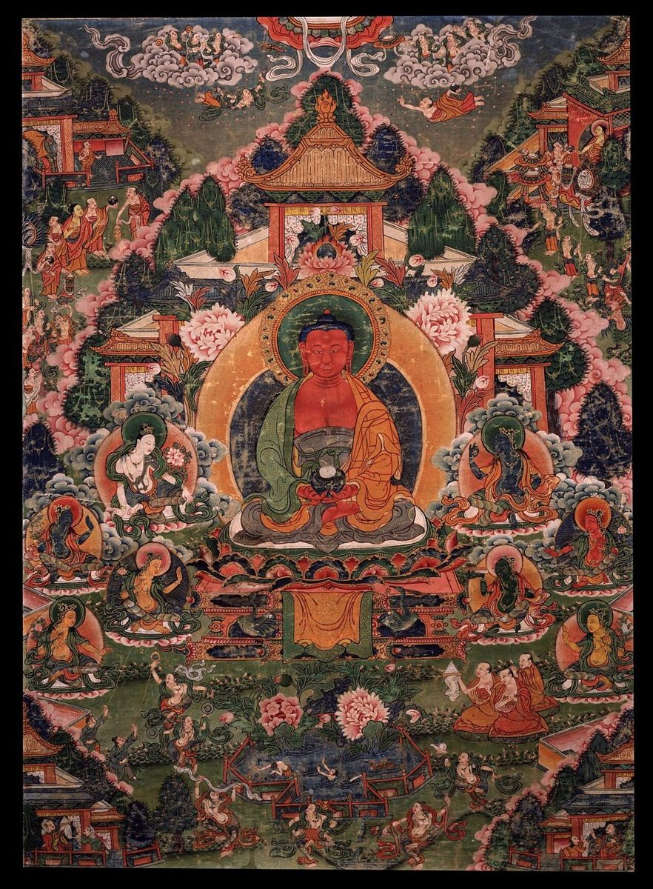
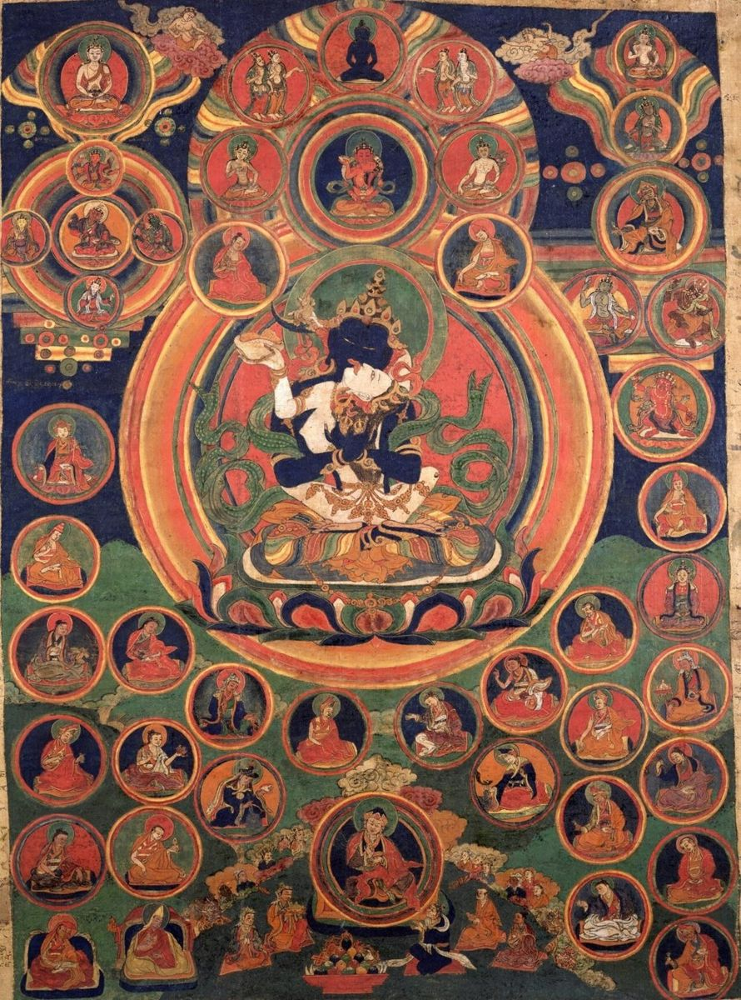

Discover the Art of the Thangka
Understanding the Sacred Art of the Himalayas
Lapis Lotus Journal is an independent guide to thangka painting, the scroll art of Tibet, Nepal, Bhutan, and the wider Himalayan world. We write for curious beginners, collectors, and meditation practitioners who want to understand what they are looking at before they hang a painting on their wall.
Each thangka is a carefully composed map of meaning. Body colors, hand gestures, thrones, landscapes, and even the order in which the painter worked all follow traditions that are many centuries old. Our goal is to explain those traditions in plain, friendly English.

What You Will Find Here
- Color and materials. How mineral pigments, plant dyes, and real gold give thangkas their glow.
- Iconography. What the figures hold, how they sit, and why their colors never change.
- Craft. How a painting moves from stretched cotton to the final opening of the eyes.
- Styles. How the major painting schools differ and how to recognize each one.
Why Thangka Art Matters
For centuries, thangkas have been used as supports for meditation, teaching tools, and offerings. They could be rolled up and carried between monasteries and nomad camps, which is why so many have survived. Today they hang in homes, studios, and museums around the world, still carrying the same quiet invitation to slow down and look closely.

Explore the Blog for in-depth guides, or visit the Contact page if you have a question about a painting you own or are thinking about buying.